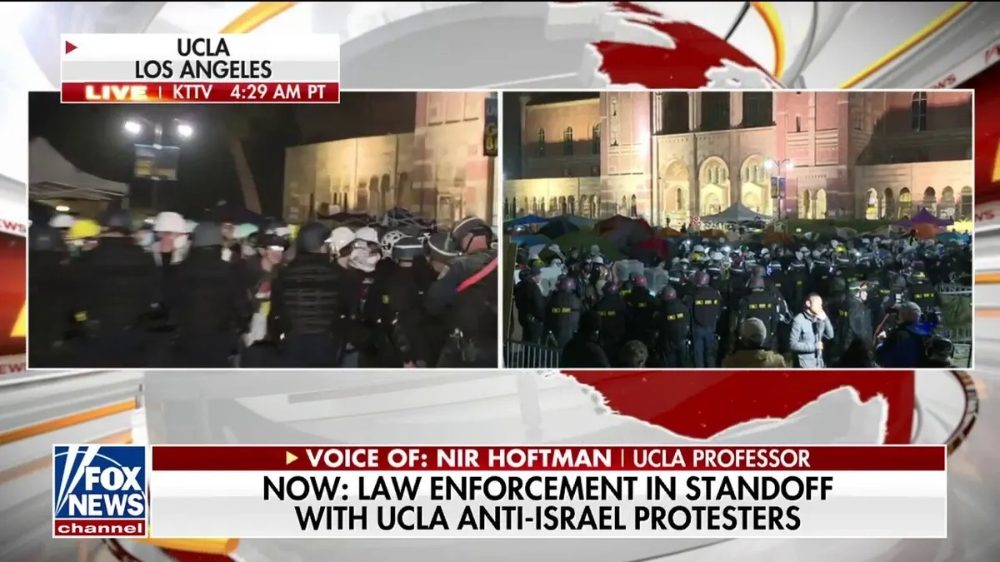
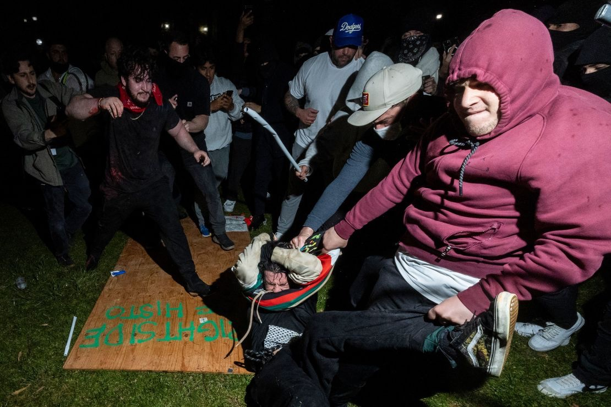

01 / 03
A chronological record of the language used to describe UCLA protesters from April 25 to May 2, 2024. This is not commentary. It is documentation. The words speak for themselves.
Language Frequency: Spring 2024 Campus Protest Coverage
Timeline: April 25 to May 2, 2024
April 25, 2024
CalMatters
"Steve Garvey calls pro-Palestinian student protesters terrorists"
Before any violence had occurred at any encampment, Senate candidate Steve Garvey applied the federal criminal designation "terrorist" to students exercising First Amendment assembly rights. The label was used ahead of time, not in response to documented harm, but to categorize a group before they could be understood on their own terms.

Fox News chyron framing the protests through the lens of Islamic terrorism, April 2024
Late April, 2024
Fox News
Protesters "terrorize Americans". Campus described as a scene of "chaos" and "lawlessness"
Cable news coverage consistently used the language of terrorism and public disorder to describe encampments that independent documentation showed were, in 97% of cases across the country, entirely nonviolent. The framing established threat before evidence of threat.
Late April, 2024
Congressional Hearings
University presidents grilled on failure to stop "antisemitic mobs" protests characterized as official failure
According to the Georgetown Bridge Initiative's 2024 Islamophobia report, congressional hearings systematically mischaracterized protesters as antisemitic mobs, erasing the political content of their demands and replacing it with a charge of hatred. Many Jewish students and faculty who participated in the encampments were made invisible by this framing.
April to May, 2024
NPR / Crisis Consultants
Colleges hire crisis consultants who warn of "violent activity" protesters framed as official threat requiring preparation
NPR reporting on university responses documented crisis management firms advising administrators to treat encampments as security threats. This official framing treated students as risks to be managed rather than members of the community to be heard. It matched the political language being used publicly.
May 1, 2024 (Night)
Los Angeles Times
Counterprotesters attack UCLA encampment for two hours. Campus police stand down.
While the language of threat had been applied exclusively to encampment participants, actual violence came from outside. The LA Times documented the two-hour attack and the prolonged absence of police response. The people who had been labeled as threats were the ones being assaulted while authorities waited.

May 1, 2024: Counterprotesters attack encampment participants on Royce Quad. Police did not intervene for roughly two hours.
May 2, 2024 (Night)
Los Angeles Times / UCLA
Riot police clear Royce Quad. 200+ students arrested.
The night after the attack, law enforcement moved against the encampment. The students who had been attacked received no similar response. Those who had been labeled "terrorists" and "mobs" in weeks of rhetoric were now arrested at scale. The language had prepared an audience to accept this outcome.
The Closing Question
97% of campus protests in spring 2024 were nonviolent. The UCLA encampment issued two demands: divestment and a ceasefire call. Where did the monster come from?
Data on protest nonviolence from the Armed Conflict Location & Event Data Project (ACLED). See The People → for the full picture.
"Where did this language come from? What did it make possible?"